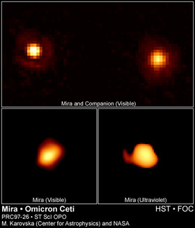

Red Giant (RG) stars result from low- and intermediate-mass Main Sequence stars of around 0.5-5 solar masses. After billions of years of core nuclear fusion reactions converting hydrogen (H) to helium (He) whilst on the Main Sequence, the hydrogen supply in the core is exhausted and there is nothing left to counter the effects of gravity. As the degenerate He core starts to shrink, heat is released due to the sudden compression of the layers of gas. The centre of the core collapses quickest and hydrogen ‘shell burning’ commences in a shell layer around the core once the layer reaches sufficient density and temperature. The increasing core temperature results in an increasing luminosity, while the resulting radiation pressure from the shell burning causes the outer diffuse envelope of the star to expand to hundreds of solar radii, hence the name ‘Giant’. The increasing size of the star outweighs the increase in luminosity, the effective temperature decreases to around 3000 K and the star takes on a redder appearance (in practice, red giants can appear to be orange or red). Stars are thought to typically spend 1 per cent of their lives in the RG phase. Examples of well-known stars in the RG phase are Aldebaran (Alpha Tauri) and Mira (Omicron Ceti). More massive Main Sequence stars evolve more quickly and expand further to become Red Super Giants (RSG). Betelgeuse (Alpha Orionis) is a well-known example of a RSG.

Credit: Margarita Karovska (Harvard-Smithsonian Center for Astrophysics) and NASA